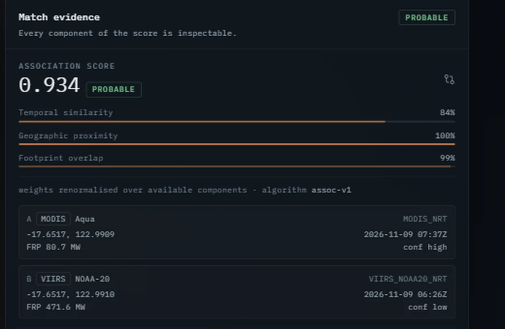
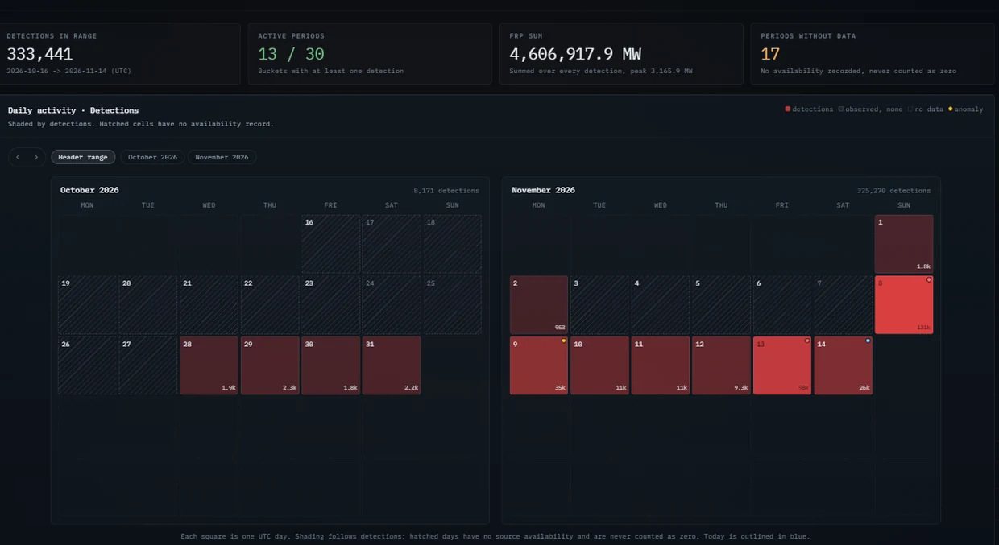

Contents
A hotspot is a satellite detection. It may be a wildfire, an agricultural burn, industrial heat, a false positive, or a fire hidden by cloud. Nothing in HERMES is a substitute for an emergency service, and the platform is not intended as the sole basis for protecting life or property.
The problem
The fire record is changing instruments. NASA's MODIS sensors on Terra and Aqua have carried the global active-fire record for more than two decades and are ageing out. VIIRS on Suomi-NPP, NOAA-20 and NOAA-21 continues that record at a finer resolution, with a different detection algorithm, different confidence semantics and different overpass times.
Both feeds arrive as the same shape of CSV, which makes the problem look simpler than it is. It is not a formatting problem. The two families disagree about what a detection is:
- Resolution. MODIS reports roughly 1 km pixels; VIIRS reports 375 m pixels. One VIIRS footprint is a fraction of a MODIS footprint.
- Confidence. MODIS ships a 0–100 number plus a category. VIIRS ships a categorical
low/nominal/high. The word nominal is not the same claim in both feeds. - Radiometry. Brightness temperatures come from different channels and are stored under different field names. They are not interchangeable measurements.
- Timing. Satellites are not coincident. The same fire can be observed hours apart, or by one instrument and not the other.
Add the two totals together and the result describes neither instrument. In one 30-day window of the live store, the same query returns 59,272 MODIS detections and 274,169 VIIRS detections. That 4.6× difference is sensitivity and pixel size, not 4.6× more fire.
An emergency manager does not need two sensor stories. They need one calendar that says what was observed, what was not, and how confident the platform is in the difference.
The design decision: association, not merging
The tempting shortcut is to de-duplicate by proximity — collapse any two detections that are close together and in the same hour into one “fire”. That produces a clean-looking number and destroys the ability to defend it. It also silently decides that two instruments observing the same place are observing the same thing.
HERMES keeps three concepts separate, and never lets one stand in for another:
- A raw observation is one row from one instrument at one time. It is kept as retrieved.
- An association is a proposal that two observations from different sensor families may describe the same hotspot. It carries a score and its components, and it is labelled probable, possible or rejected.
- An estimated event is a spatiotemporal cluster of observations. It is an estimate of a fire, not a confirmed fire, and it never implies continuous monitoring between overpasses.
The harmonised series is therefore a documented de-duplication, not a calibrated fire count:
harmonised = MODIS + VIIRS − matched_VIIRS
matched_VIIRS = distinct VIIRS detections on the same UTC day
with at least one probable or possible MODIS associationRaw MODIS and raw VIIRS remain available beside it, unchanged. A day that has not been scanned for associations keeps its raw count, and the response says so rather than implying a complete de-duplication.
Blend MODIS and VIIRS confidence into one probability. Compare brightness temperatures across instruments. Treat a hotspot count as a fire count. Call an association a match of physical identity. Read a missing day as a zero.
Architecture
The platform is a modular monolith: separate services with explicit responsibilities, one deployable API, one console. The boundary that matters most is between canonical analysis — observations, associations, events, rollups — and the raw provenance stored behind it. Analysis never reads raw payloads to answer a question, which is why a damaged payload can fail an export without changing a single number on screen.
| Layer | Responsibility | Where it lives |
|---|---|---|
| Ingestion | NASA FIRMS area queries in ≤5-day windows, tiled and checkpointed so a run resumes instead of duplicating; retries with backoff; the MAP key redacted from every log line. | services/firms/, services/ingestion.py |
| Analysis | Per-sensor normalisation, cross-family association, event clustering, calendar and regional aggregation, anomaly scoring. | services/normalization.py, harmonization.py, events.py, calendar.py |
| Storage & integrity | PostgreSQL canonical tables and rollups; deterministic payload blocks with dual SHA-256 receipts; export-before-delete gates. | services/raw_payloads.py, raw_archive.py, integrity.py |
| Interface | Versioned REST API; a React console with MapLibre, a burning calendar, analytics, regional profiles, exposure screening and exports. | api/v1, frontend/src/pages |
The runtime stack is deliberately ordinary: FastAPI and SQLAlchemy on Python, PostgreSQL (PostGIS optional — polygon counting does not require it, SQLite runs the tests), and React + TypeScript + Vite + MapLibre in the browser. There is no AI in the analytical path: the assistant calls the same approved functions the console does, and cannot invent a measurement.
Deployment is configuration, not a rewrite: local, hybrid and cloud profiles share one storage interface, detections export to partitioned Parquet with Zstandard, and the public demo runs the frontend and the API as Vercel services against a pooled PostgreSQL instance.
How a record moves
One FIRMS row becomes a calendar cell through six steps. Each step is idempotent, and each keeps enough evidence to explain the next.
1 · Retrieve
Area CSV queries are capped at five days and split into spatial tiles with per-partition checkpoints. A 200 with an empty body means no detections; an authentication error is never conflated with a quiet day. Standard Processing products power history; Near-Real-Time products power the live console.
2 · Preserve
Each response is kept as an immutable raw payload. FIRMS supplies no row identifier, so identity is a SHA-256 fingerprint over the source fields. Payloads are compressed into verified blocks before they reach the database (section 05).
3 · Normalise
Separate adapters per sensor family validate coordinates and timestamps, reject impossible rows instead of repairing them, keep the original confidence value and the original category, label brightness channels per instrument, and flag FIRMS rows whose type marks a non-fire heat source.
4 · Associate
Only observations from different sensor families are compared. Every candidate pair is scored and stored, including the ones that fail:
S = (wt·T + ws·G + wf·F) / Σw
T = 1 − (|Δt| / window)² quadratic temporal tolerance
G = 1 − distance / max_distance
F = 1 − distance / (ra + rb) circular footprint approximation| Parameter | Value | Why |
|---|---|---|
| Temporal window | 180 min | Hard cut-off; satellites are minutes to hours apart. |
| Screening distance | 2 km | A candidate must be plausibly the same hotspot. |
| Weights | 0.40 / 0.45 / 0.15 | Time, geodesic distance, footprint overlap. |
| Probable | score ≥ 0.75 | 326 pairs in the measured window. |
| Possible | score ≥ 0.55 | 2,047 pairs. |
| Rejected | stored ≥ 0.35 | 4,851 pairs kept for audit, subtracted from nothing. |

5 · Group
Events use DBSCAN in a normalised space-time metric — 1.5 km, 24 hours, at least two observations. Each event keeps its member observation ids, first and last detection, extent, sensor count, and separate maximum and aggregate FRP.
6 · Aggregate and serve
Day, week, month and year buckets are computed over stored detections, with six independent metrics per bucket and a completeness record on every one. The API serves the same numbers the console shows, and any cell drills back to the observations behind it.
Provenance and deletion: FireSeal
A platform that claims every count is traceable has to keep the raw bytes. It also has to store them in a way that does not double the database. Those two requirements collide in an obvious place: the original FIRMS payload was being written twice — once against the raw row, once again against the canonical observation.
At roughly 265 bytes per row, a payload sits below PostgreSQL's TOAST threshold, so the database never compressed it. The live store carried the same bytes twice, and the only obvious fix — pruning the duplicate — would have deleted provenance.
The block algorithm
FireSeal Core batches the payload instead of repeating it. Payloads for one acquisition day and source are serialised to JSONL with sorted keys, then gzipped at level 6 with mtime=0, so identical content always produces an identical hash. Each raw row keeps a (block_id, block_row) pointer and its inline payload is set to SQL NULL.
for chunk of 2000 rows, per acquisition day and source:
content = JSON lines (sorted keys, compact separators)
block = gzip(content, level=6, mtime=0)
store { compressed_sha256, uncompressed_sha256,
rows, sizes, codec, level, data }
row → (block_id, block_row); inline payload → NULLReading is where the guarantee lives. A block is only trusted after its compressed SHA-256 matches, it is gunzipped, and the uncompressed SHA-256, byte count and row count all agree. A mismatch raises instead of returning wrong provenance.
| Measured on the live store | Value |
|---|---|
| Payload blocks | 182 |
| Payloads inside them | 333,834 |
| Uncompressed JSONL | 88.4 MB |
| Stored gzip | 7.9 MB |
| Compression | 11.2× |
| Raw rows with an inline payload left | 0 |
A representative 2,000-row block compresses from 526,889 bytes to 48,252 bytes — 10.9×. Per-row gzip, by contrast, measured 1.33× on the same data: batching is what makes this work.
Deletion has a gate
Raw payloads follow a 90-day retention policy. Before any range is removed, its archive is exported through a deterministic codec, written to a .part file, read back and re-hashed, then published with a single atomic rename. The deletion endpoint re-verifies that archive first; a corrupt archive blocks the delete. Nothing is overwritten or blindly retried — a failed write is quarantined with a JSON report and stays put until a human decides.
The consequence is that “raw data is never deleted” is not a policy statement. It is a property of the code path: there is no route from delete to row that does not pass through a passing receipt.
Reading it honestly
The most useful thing a fire platform can do is be precise about what it does not know. HERMES treats coverage as a first-class state rather than an absence of data.
In the 30-day window used for this write-up, 13 days carry detections and 17 have no availability record. Those 17 are drawn as hatched cells and are never counted as zero. The same rule applies at the edges of a product's coverage window: a date before the first available observation is labelled before_coverage, not quiet.

Anomalies are statistical claims about detections, not predictions about fires. The engine scores a day against the median of preceding observed days with a robust z-score, falls back to a standard-deviation scale when MAD is zero, and refuses to score at all when the history is too short. In this window it flags four days; each carries its baseline, sample size and a written explanation rather than a bare severity colour.
| Capability | State | Evidence |
|---|---|---|
| Ingestion, normalisation, association, events | Working | 7,224 pairs scored; 3,056 events with provenance. |
| Calendar with coverage states | Working | 13 of 30 days observed, stated in the headline. |
| Anomaly screening | Working | 4 flags, baseline and sample size attached. |
| Regional climatology | Partial | Refused, not guessed, while history is short: “insufficient history”. |
| Exposure screening | Partial | Proximity to registered assets; no population dataset bundled. |
| Burned-area agreement | Not measured | Stated as a gap; no accuracy claim is made. |
| Forecasting | Not shipped | Roadmap only. |
Limitations and out of scope
These are the limits a reader should carry into any decision made with this platform.
- The record here is short. This write-up uses a 30-day window, and 17 of those days have no source coverage. Seasonal claims need years; the engine says so rather than inventing a baseline.
- Detection is not fire. Cloud, smoke and small fires change what is seen. A quiet day is not proof of no fire, and a hotspot is not a confirmed ignition.
- The instruments are not calibrated to each other. MODIS and VIIRS are reported separately wherever a comparison would be misleading. No radiometric cross-calibration has been attempted.
- Exposure is geography, not risk. Distance bands screen proximity to places someone registered. They do not model spread, vulnerability, wind, fuel or response capacity.
- De-duplication is not a fire count. The harmonised series removes VIIRS detections already associated with MODIS. The association score is not a probability of physical identity, so the result is a documented de-duplication, not a calibrated number of fires.
- Retention. Raw payloads are kept for 90 days and then exported and pruned; canonical analysis is retained. Payload blocks are not a substitute for the source archive.
Out of scope for this release: burned-area validation, forecast skill scoring, alerting, and any claim of operational readiness for a specific agency. The public demo runs on a demo dataset.
Attribution
HERMES is built on NASA's Fire Information for Resource Management System. Active-fire detections come from MODIS (Terra, Aqua) and VIIRS (Suomi-NPP, NOAA-20, NOAA-21). Standard Processing products power historical analysis; Near-Real-Time products power the console. Processing versions are retained and never merged silently.
The console, API, pipeline and FireSeal storage layer are our work, released under the MIT licence. The page you are reading is a single HTML file with no build step — the same artefact that is reviewed in the repository is the one that ships.